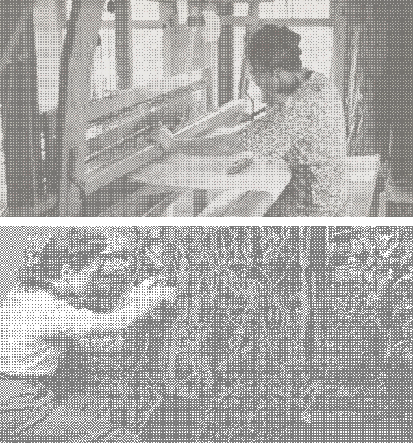

Stitch'n'Bitch
Exploring the intersection of crafts and computing through hands-on weaving and artist talks.
Organized at FAccT'2026 in Montreal, Canada. See the webpage! Photos of the event will be added soon :)
Links

Exploring the intersection of crafts and computing through hands-on weaving and artist talks.
Organized at FAccT'2026 in Montreal, Canada. See the webpage! Photos of the event will be added soon :)
